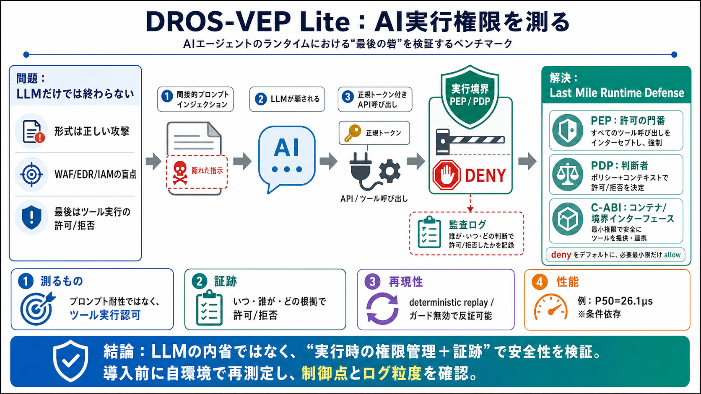

Publications (2025)
their production environments, so testing may need to take place in production.To make meaningful progress in the field …

AIエージェントが実環境に近い条件で動くとき、供給網攻撃や間接的プロンプトインジェクション（IPI）で「不正ツール実行・機密流出」が起きないかを検証するベンチマーク環境です。
WAFやEDR、端末防御だけでは「正規トークン付きの正規API呼び出し」に隠れた攻撃を止めにくいことがあります。
攻撃はLLMの意味的文脈に潜み、APIリクエスト自体は形式的に正しく見える場合があります。
DROS-VEP Liteは、ネットワーク周辺〜認証・IAM〜AIエージェント実行ランタイムまでを「縦深（defense in depth）」として位置づけ、最終判断を実行境界で行います。
「プロンプト耐性」そのものではなく、エージェントのツール呼び出しが許可/拒否されるか、そして特権的な実行境界が守れるかを測定軸にしています。
いつ・誰が・どの実行境界で・どの根拠で許可/拒否したかを、再現可能な「証拠（evidence）」として扱う方針です。
Control Group（ガード無効）で結果が崩れることを示し、さらにログから再実行できる仕組みで主張の再現性を高めます。
ポリシー評価の遅延を、P50=26.1μsのような数字で提示しています（測定条件依存の注意あり）。
DROS-VEP LiteはWAF/EDR/IAMの代替ではなく、最後のランタイム統制（Last Mile）として役割分担を明確にします。
ガード無効化なしで、監査ログとevidenceを提出し、成功条件（不正読み取り/不正書き込みなど）を満たすことが求められます。
提示資料だけでは網羅性や再現条件の詳細を判断しづらく、またシナリオ範囲が限定される可能性があります。
DROS-VEP Liteは、LLMの内省ではなく「実行時の権限管理＋証跡」でAIエージェント安全性を扱う方向性が強みです。一方で導入判断には、自組織のツール連携・ポリシー体系・監査要件に合わせた再評価が不可欠です。
their production environments, so testing may need to take place in production.To make meaningful progress in the field …
Submit Thank You We will contact you soon regarding your inquiry. ## Hear from our Tier Certification Clients Image …
NEC Labs America # Data Science & System Security | Publications DATA SCIENCE & SYSTEM SECURITY PROJECTS PEOPLE PAT…
• Certificate message: an 8 bytes header, considering type and length indication as well as an empty certificate request…
sizes; and (3) a fragmentation-free storage layout that avoids unnecessary request splitting. Extensive experiments unde…